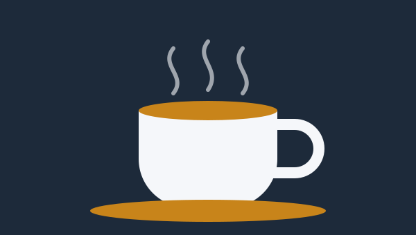

Welcome to The Daily Cup
Hi, I'm [Your Name], and this website is a small tribute to my favorite daily ritual: making a good cup of coffee. I started paying attention to coffee a couple of years ago, when I realized that the bag of pre-ground beans in my kitchen tasted nothing like the cups I loved at local cafes. That curiosity sent me down a rabbit hole of grinders, kettles, scales, and more tasting notes than I ever expected to write.

What I enjoy most is how many small choices change the final result. The origin of the beans, the roast level, the size of the grounds, the temperature of the water, and the time spent brewing all leave a fingerprint on the flavor. A light roast from Ethiopia can taste like blueberries and tea, while a dark roast from Sumatra can taste like cocoa and cedar. Learning to taste those differences has made me a more patient and observant person, even outside the kitchen.
On this site you will find a closer look at the ways I brew at home, including a chart of how often I use each method and a short list of tips that improved my coffee the most. I am still learning, so I treat every cup as a small experiment. If you have a favorite method or a roaster I should try, I would love to hear from you using the contact links below.
Continue to my brewing methods
Contact
- Email: you@example.com
- GitHub: github.com/your-username
- LinkedIn: linkedin.com/in/your-profile